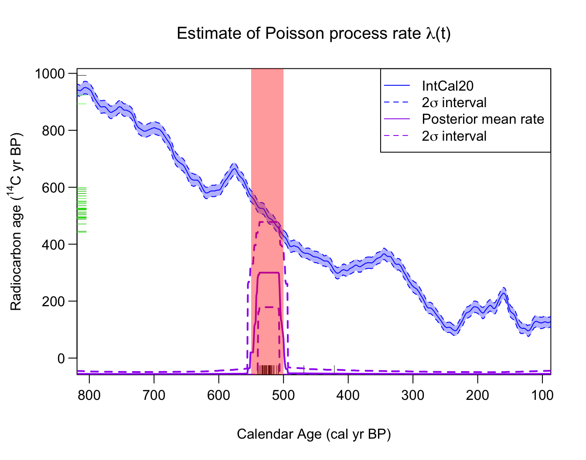
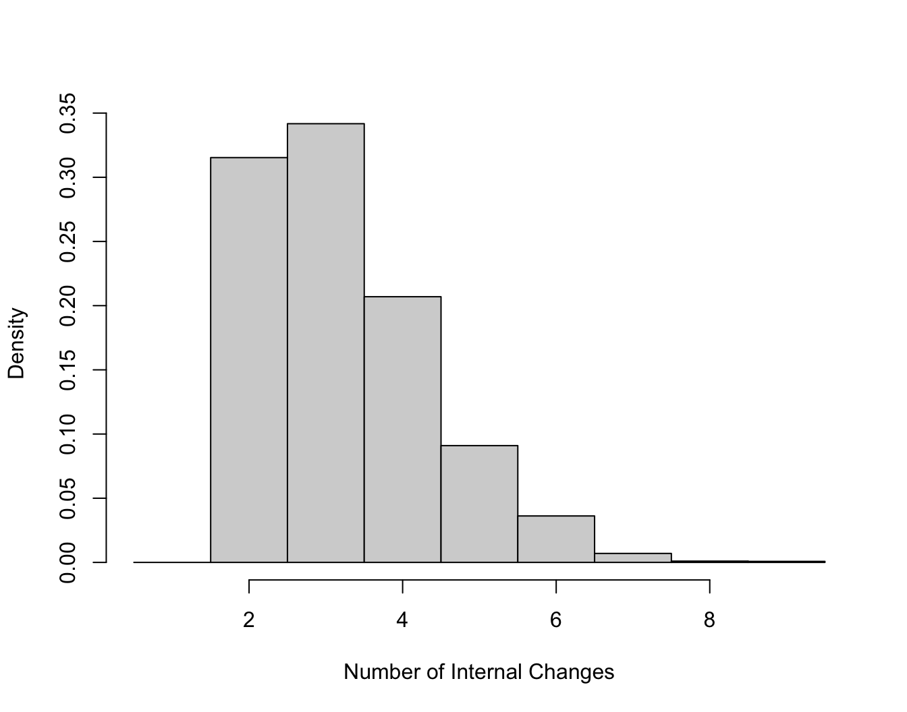
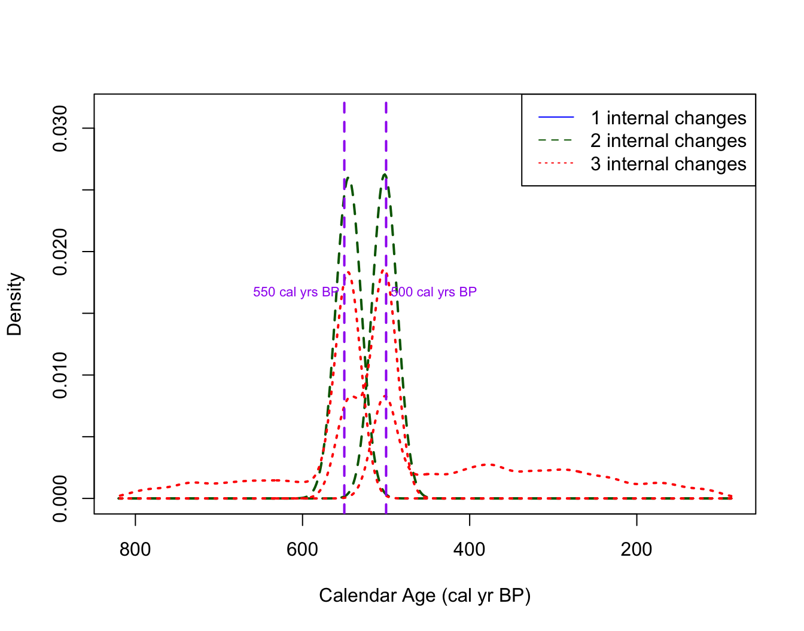
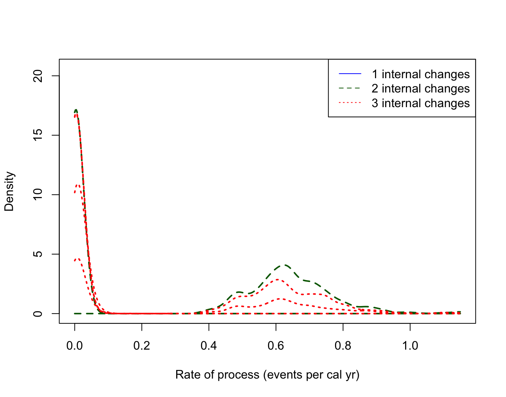

Calibrating and Summarising Mixed Sets of 14C Samples
Source:vignettes/Calibrating-mixed-sets-of-samples.Rmd
Calibrating-mixed-sets-of-samples.Rmd
library(carbondate)
set.seed(15)Calibrating sets of 14C samples from mixed environments
Poisson process calibration
To summarise sets of
C
determinations from mixed environments (i.e. samples that require
calibrating against multiple calibration curves such as IntCal20,
SHCal20, and Marine20) using a Poisson process, then you need to use the
PPcalibrateMixedCurves() function. As well as providing the
14C determinations, this requires you to specify several
additional variables:
-
sample_sourceA character vector containing"NH","SH"and"Marine"dependent upon the environment of each sample in the set. This will determine if the sample will be calibrated against IntCalXX ("NH"), SHCalXX ("SH"), and MarineXX ("Marine") where XX denotes the curve year. This vector must be the same length as the number of 14C determinations. -
curve_yearOne of"2020","2013","2009"or"2004"specifying the calibration curve year to use for calibration. Make sure you use the that is appropriate to the calibration curve. The default is to choose"2020". -
delta_rA vector of the offset for each specific 14C sample. For atmospheric samples (i.e."NH"or"SH"samples) select0unless you want to model them as offset from the relevant IntCal or SHCal curve. -
delta_r_sigA vector of the and associated uncertainty on for each sample. Again, for atmospheric samples, select0unless you have modelled them as offset from the relevant curve.
See Reimer et al. (2020) for more information on the IntCal20 curve, Hogg et al. (2020) for the SHCal20 curve, and Heaton et al. (2020) for the Marine20 curve.
Example - Uniform Phase Mixed Data
The dataset pp_uniform_phase_mixed contains 40 simulated
14C samples from a range of environments. All the samples
have underlying calendar ages that have been sampled uniformly from the
calendar period from [550, 500] cal yr BP but some are assumed to come
from the Northern Hemisphere (NH - 14 samples), others from the Southern
Hemisphere (SH - 14 samples) and others from a range of Marine
surface-ocean environments (Marine - 12 samples).
The corresponding C determinations for each sample are simulated according to the relevant calibration curve for that environment (IntCal20, SHCal20 and Marine20); and the marine data have a range of different values (i.e. represent different ocean regions). The analytical measurement uncertainty of each determination is set to be 15 C yrs.
We wish to investigate if we can reconstruct the underlying calendar age distribution, a uniform phase [550, 500] cal yr BP, from which the samples were simulated based only on the set of 40 C values.
# Fit the Poisson process model to a sert of data from different environments
PP_fit_output_mixed <- PPcalibrateMixedCurves(
rc_determinations = pp_uniform_phase_mixed$c14_age,
rc_sigmas = pp_uniform_phase_mixed$c14_sig,
sample_source = pp_uniform_phase_mixed$sample_source,
curve_year = "2020",
delta_r = pp_uniform_phase_mixed$delta_r,
delta_r_sig = pp_uniform_phase_mixed$delta_r_sig,
show_progress = FALSE)
# Plot the posterior mean rate
posterior_mean_mixed_plot <- PlotPosteriorMeanRate(PP_fit_output_mixed)
#> Warning in graphics::rug(rc_determinations, side = 2): some values will be
#> clipped
#> Warning in graphics::rug(adjusted_values$rc_determination, side = 2, col =
#> delta_r_adjusted_colour): some values will be clipped
# Add shading to show the period from which the underlying data were sampled
AddShadingPlot(posterior_mean_mixed_plot,
x_start = 550, x_end = 500,
col = "red")
Here, on the radiocarbon age axis, we show as the observed C determinations as black ticks, and the adjusted determinations as green ticks. For many samples (i.e. those from the SH or NH) they are the same and so only the green ticks are visible. To keep the plot tidy, we show just the IntCal curve (even though some of the samples are calibrated against the SHCal or Marine curve).
We can see that the Poisson process summarisation provides a posterior estimate for the sample occurrence rate that accurately reconstructs the true (simulated) uniform phase [550, 500] cal yr BP calendar age distribution.
We can also access the estimated posterior mean rate
# Access the actual posterior
posterior_mixed_rate <- posterior_mean_mixed_plot$posterior_rate
head(posterior_mixed_rate)
#> calendar_age_BP rate_mean rate_ci_lower rate_ci_upper
#> 1 87 0.005176997 0.000179203 0.02472772
#> 2 88 0.005176997 0.000179203 0.02472772
#> 3 89 0.005176997 0.000179203 0.02472772
#> 4 90 0.005164320 0.000179203 0.02428469
#> 5 91 0.005169130 0.000179203 0.02428469
#> 6 92 0.005158710 0.000179203 0.02424438Plotting the number of changepoints and their locations
The object PP_fit_output_mixed can also be accessed
directly or used with the other in-built plotting functions just as with
output from PPcalibrate(), for example, we can access the
posterior estimate of the number of changepoints:
PlotNumberOfInternalChanges(PP_fit_output_mixed)
and the posterior estimate of the locations of those changepoints (conditional on their number):
posterior_changepoint_mixed_plot <- PlotPosteriorChangePoints(PP_fit_output_mixed)
#> Warning in PlotPosteriorChangePoints(PP_fit_output_mixed): No posterior samples
#> with 1 internal changes
# Add lines at 500 and 550 cal yr BP
# (the "true" changepoints in the simulation)
AddLinePlot(
posterior_changepoint_mixed_plot,
v = 550,
col = "purple",
lwd = 2,
lty = 2)
AddLinePlot(
posterior_changepoint_mixed_plot,
v = 500,
col = "purple",
lwd = 2,
lty = 2)
AddTextPlot(posterior_changepoint_mixed_plot,
x = 550, y = 0.0165,
labels = expression(paste("550 cal yrs BP")),
cex = 0.7,
pos = 2,
offset = 0.2,
col = "purple")
AddTextPlot(posterior_changepoint_mixed_plot,
x = 500, y = 0.0165,
labels = expression(paste("500 cal yrs BP")),
cex = 0.7,
pos = 4,
offset = 0.2,
col = "purple")
We can also plot the heights (i.e. rates) in each interval
posterior_heights_mixed_plot <- PlotPosteriorHeights(PP_fit_output_mixed)
#> Warning in PlotPosteriorHeights(PP_fit_output_mixed): No posterior samples with
#> 1 internal changes
Non-Parametric (DPMM) Summarisation - TBC
This functionality is still to be added (watch this space)